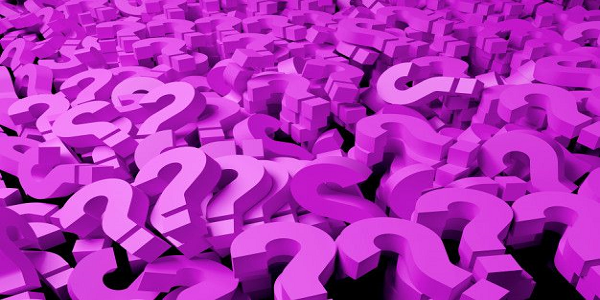

Chi siamo
Questo è un nuovo livello di giochi! Il nostro social casino è stato creato per i giocatori che non vogliono perdere tutto a causa del gioco d'azzardo. Usiamo giochi senza la possibilità di guadagnare soldi veri. Allo stesso tempo, ti divertirai giocando ai nostri giochi, godendoti il processo di gioco.
Abbiamo la registrazione online, ma puoi anche giocare come ospite se non sei un utente registrato.
Articoli
-

Come vincere alla grande giocando alle slot gratuite
Le slot gratuite sono molto simili alle slot machine che si trovano sulla Las Vegas Strip, e sono un modo molto popolare per praticare la vostra strategia. Molte persone amano anche il gioco gratuito perché permette loro di rilassarsi e sperimentare il divertimento e l'eccitazione del casinò senza rischiare alcun denaro. Potete giocare alle slot gratuite per provare nuove strategie o semplicemente per divertirvi. Questo articolo vi mostrerà come vincere alla grande giocando alle slot gratuite. Continuate a leggere per saperne di più su come vincere alla grande senza rischi.
Leggere -
Nuovo rapporto sul gioco d'azzardo simulato
Un nuovo rapporto di mercato sull'industria globale del casinò sociale è stato rilasciato da Market Study Report LLC. Il rapporto fornisce una panoramica del mercato attuale per i giochi di casinò sociali, comprese le tendenze dei prezzi, i driver di mercato chiave e il panorama competitivo. Valuta anche il contributo dei principali concorrenti, tra cui Google, Facebook e Microsoft. Di seguito sono elencati alcuni dei principali attori del settore e come si classificano in termini di entrate e quote di mercato. Per saperne di più, continuate a leggere!
Leggere -

Come giocare in un casinò sociale
Ci sono molti tipi diversi di giochi di casinò sociale, ma uno dei più popolari è Facebook. Questi giochi sono popolari con oltre 11 milioni di utenti attivi ogni giorno. Poiché sono liberi di giocare, il mercato di questi giochi è triplicato negli ultimi sei anni e vale circa 4 miliardi di dollari. Slotomania e Zynga Poker sono diventati successi di culto, ma come si fa a sapere quali sono i migliori? Questa guida ti aiuterà a trovare il gioco giusto per le tue esigenze.
Leggere